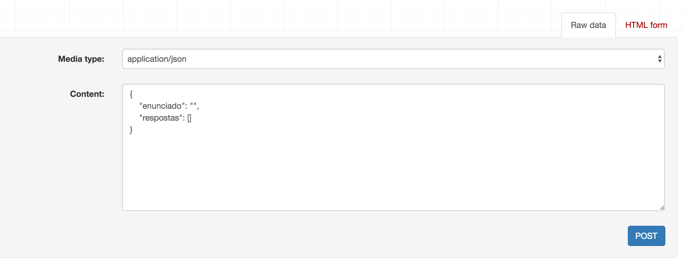

Correções: originalmente o post dizia que outra opção de frameworks para Rest API em Python seria o Flask. Mas existe o Flask-RESTful.
Rest
REST = Representative State Transfer (Transferência de Estado Representacional)
O REST é um estilo arquitetural para aplicações Web, cunhado por Roy Fielding, em 2000, na sua tese Architectural Styles and the Design of Network-based Software Architectures [1].
Em termos gerais, uma aplicação que segue as especificações REST disponibiliza métodos (verbos), geralmente pelo protocolo HTTP, que agirão no servidor, modificando ou obtendo informação.
Com o uso dos verbos teremos acesso aos resources (recursos), que são qualquer mapeamento de um conjunto de dados para uma determinada entidade.
Exemplo de um resource de uma entidade Usuário:
{
"nome": "Roselma Mendes",
"idade": 27,
"Ocupação": "desenvolvedora",
"tipoDeAcesso": "Admin"
}
Em linhas gerais, se temos uma url http://servidor-qualquer.com/v1/posts que recebe um POST com um json definido com campos para um usuário. A url gerará uma ação do tipo "Crie um usuário" (um registro na tabela usuario será criado). Esta ação gera uma resposta com informações de status e a url única e exclusiva para acessar o registro, entre outras informações da requisição.
201 Created
{
"usuario": {
"id": 3,
"nome": "Roselma Mendes",
"idade": 27,
"ocupacao": "desenvolvedora",
"tipoDeAcesso": "Admin",
"links": [
{
"href": "/usuario/3",
"rel": "self",
"method": "GET"
},
{
"href": "/usuario/3",
"rel": "edit",
"method": "PUT"
},
{
"href": "/usuario/3",
"rel": "delete",
"method": "DELETE"
}
]
},
"links": {
"href": "/usuario",
"rel": "list",
"method": "GET"
}
}
Quando temos um serviço baseado em REST costumamos chamá-lo de um serviço Restful.
Verbos
Os verbos mais comumente usados são o GET (visualizar), POST (criar), PUT (atualizar/substituir), PATCH (atualizar/modificar) e DELETE (remover). Além desses verbos, existem outros, mas pouco usados.
No caso do GET, por exemplo, dado que uma aplicação que interage com sua API "chame" http://servidor-qualquer.com/v1/usuario/1, ela obterá as informações do registro 1 da tabela usuario. O método GET serve tanto para uma lista de usuários como para obter um único registro.
API
API = Application Programming Interface (Interface de Programação de Aplicação)
Uma API é um conjunto de rotinas usadas pelas aplicações com o intuito de usar um serviço sem conhecer sua implementação. No caso de Rest API's, estamos falando de um conjunto de operações disponibilizadas por um serviço Restful.
Django
Não o filme do Quentin Tarantino estrelado pelo Jamie Foxx.
Em se falando de Python, Django é um framework para construção de aplicações Web "que encoraja o desenvolvimento rápido e um design limpo e pragramático".
Imagine que temos uma pesquisa de satisfação que possui uma questão com algumas opções para as pessoas escolherem como resposta.
Aqui abaixo temos um HTML que exibe o enunciado da questão e quantos votos cada resposta recebeu.
Django permite acessarmos, dentro de um arquivo HTML, o objeto Pergunta e com um for percorrer suas respostas (linha 4).
E abaixo definimos uma classe View onde relacionamos a classe Pergunta com o resultados.html (linha 8).
Django Rest
Já o Django Rest é a implementação do Django para fazermos Rest API's.
Dado que tenho uma classe herdando de models.Model do Django, chamada Pergunta, e a classe Resposta. Ambas relacionadas visto que uma pergunta pode ter várias respostas.
Criarei uma view (PerguntaView) que terá definido um serializer chamado PerguntaSerializer.
O Django Rest possui uma quantidade de classes View que já abstraem os principais verbos que um serviço Restful precisa. No exemplo acima utilizamos o ListCreateAPIView que possui POST e GET já implementados.
Por sua vez, o serializer faz a "conversão" dos dados de um objeto (Model) para a representação em json (ou outro formato). E vice-versa.
|
Não necessariamente sou obrigada a retornar uma ou mais entidades da forma como elas estão representadas no banco. |

|
Pelo serializer tenho liberdade de mexer em como desejo representar uma ou mais entidades. Adicionando, removendo campos de acordo com a necessidade do projeto.
Tirando alguns outros passos não mencionados, teremos a url http://localhost:8000/v1/perguntas recebendo um json (método POST) e recebendo um outro json em resposta.

Para facilitar a vida de quem desenvolve, o Django Rest disponibiliza uma interface web que nos permite explorar os verbos implementados.

Por fim
Além do Django Rest, para a linguagem Python existem outros frameworks voltados para Rest API's como o FlaskFlask-RESTful.
Vale dar uma olhada em outras opções e escolher a que melhor atende as necessidades do seu projeto.
Esse post foi muito mais uma visão geral do que é o Django Rest, não entrei em detalhes de como colocar a aplicação para funcionar, então se você se interessou em saber mais sobre visite a página oficial do projeto. Lá tem alguns tutoriais para aprofundar melhor no framework.
No mais deixe suas perguntas nos comentários que ficarei feliz em responder :) (rosto sorrindo)
Claro que críticas, sugestões também são bem-vindas!
Referências
Architectural Styles and the Design of Network-based Software Architectures - Chapter 5